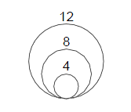

Origin 2015から、2Dグラフにバブルスケールオブジェクトを追加出来ます。Origin 2017から、3Dグラフにも追加出来るようになりました。バブルスケールは、バブルプロットのバブルのサイズそれに対応した数値のラベルの凡例を表示した特別なラベルオブジェクトです。バブルのサイズは、作図の詳細（プロット属性）ダイアログのシンボルタブで、制御します。3Dグラフでは、レイヤ投影が「透視法」に設定されていると、オブジェクトがビューアから遠くなるにつれてバブルスケールが正確でないように見えることがあります。
バブルグラフあるいは、カラーマップバブルグラフを作図したとき、グラフ内にデフォルトでバブルスケールが追加されます。
また、サイズインデックスを使用した2Dのシンボルグラフと3Dの散布図に、次の方法でバブルスケールを追加できます。
このダイアログは、バブルスケールのスタイルの制御や編集に使用されます。このダイアログはツリーノード構造で構成され、編集するためには、左パネルで希望のページ選択し、右パネルで設定を変更します。
バブルスケールの制御ダイアログボックスを開くには：
または
ここにバブルスケールの開始値をセットします。
ここにバブルスケールの終了値をセットします。
| タイプ |
|
|---|---|
| 値 | このオプションは、 タイプで 増分が選択されているときのみ利用できます。ここにバブルスケールの増分の値をセットします。 |
| 度数 | このオプションは、タイプでカウントが選択されているときのみ利用できます。そして、テキストボックスに必要な合計のスケールレベルの数を入力します。 |
| データセット | このオプションは、タイプでデータセットが選択されているときのみ利用できます。このドロップダウンリストで、バブルスケールとするデータセットを選択します。また、目的のデータセット名を入力したり、スペース区切りの数字も使用できます。 |
| 最初の値 | このオプションは、タイプでカウントか増分が選択されているときのみ利用できます。 バブルスケールの最初のレベル値を指定します。この値は、バブルスケールの開始と終了の値の範囲内にあり、指定しない場合は、開始の値が使用されます。 |
バブルスケールレベルのラベル表示は、このツリーノード下のコントロールによって編集します。
このコントロールについての詳細は、軸ダイアログの目盛ラベルのヘルプファイルを参照してください。
| 色 | このドロップダウンリストから、ラベルの色を選択します。カスタムカラーの定義をクリックすると、色の設定ダイアログが開き、RGBを指定するとカスタムカラーを作成できます。 |
|---|---|
| 回転（度） | Originは、バブルスケールのラベルを回転して表示できます。テキストボックスに正の数を入力するとラベルは反時計回りに回転し、負の数を入力するとラベルは時計回りに回転します（Originは入力された負の数を対応する正の数に変換して回転させます）。
<自動>は、バブルスケールオブジェクトの方向を参照してバブルスケールラベルを自動で回転することを意味し、ラベルは常にバブルスケールオブジェクトに垂直になります。 |
| フォント |
|
このドロップダウンリストで、バブルスケールの背景を選択します。
このドロップダウンリストで、次の2種類のバブルスケールのレイアウトを選択できます。
| レイアウト = 線形 | レイアウト = 入れ子 |
|---|---|

|
 |
| 最初のシンボルに従う | スケールのバブルの形状は、データプロットの最初のデータポイントのスタイルに従います。 |
|---|---|
| 塗りなしの黒縁 | シンボルのスタイルに関係なくバブルのスタイルを、塗りつぶしなしの黒い縁にセットします。 |
このコンボボックスを使うか、スケール内にあるシンボルの境界の太さを入力します。
値は、約1ピクセルを100としたシンボルの元の太さのパーセンテージです。
もしこの値を200に設定すると、シンボルの境界の太さは元の線の太さの2倍となり、約2ピクセルになります。
元のプロットの境界の太さを従うには、自動を選択します。
このラジオボタンは、レイアウトの設定が線形の時に使用できます。
| 垂直 | これが選択されると、バブルスケールオブジェクトは常に垂直方向になります。 |
|---|---|
| 水平 | これが選択されると、バブルスケールオブジェクトは常に水平方向になります。 |
このラジオボタンは、レイアウトの設定が線形の時に使用できます。
バブルスケールと、対応したラベルの順序を逆に表示する場合、このチェックボックスにチェックを付けます。
このラジオボタンは、レイアウトの設定が入れ子の時に使用できます。
このチェックボックスを選択すると、バブルスケール内のシンボルの左半分のみ表示されます。
バブルスケールの反対側にラベルを表示するか指定します。
レイアウトで線形が選択されている時のみ利用できます。バブルシンボル間の間隔を指定します。重なりを防ぐために、間隔の大きさに最小値の制限があります。
このブランチのオプションは、バブルスケールオブジェクト内の間隔を制御します。レイアウトタイプによってオプションが異なります。全ての設定は、バブルスケールのラベルフォントの高さの%で定義されます。
線形
| シンボルの縁からのラベルオフセット | 最大のシンボルの縁と、それに対応するラベル館の間隔を指定します。 |
|---|---|
| シンボル中心からラベル端のオフセット |
対応するバブルシンボルの中心に関する、バブルスケールオブジェクトの方向に従ってラベルを移動するためのオフセットを指定します。正と負の値を入力できるので、反対方向に移動することもできます。 |
入れ子
| シンボル中心からラベルオフセット | ラベルとシンボル中心間の水平間隔を指定します。正と負の値を入力できるので、反対方向に移動することもできます。 |
|---|---|
| シンボル中心からラベル端のオフセット | ラベル下部 回転 が0の時)と対応する場bるシンボルの上部間の垂直間隔を指定します。正と負の値を入力できるので、反対方向に移動することもできます。 |
このラジオボタンは、レイアウトの設定が入れ子の時に使用できます。
このチェックボックスを選択すると、参照バブルとラベルをつなぐ引出線が、バブルスケール内に表示されます。間隔の設定がない場合、参照バブルのシンボル上部でオブジェクトが始まり、ラベルテキスト左側の中央で終わります。このチェックボックスが選択されていると、引出線のスタイルについての以下のオプションが提供されます。
| 線の太さ | リストから選択するか、キーボードで入力して引出線の太さを指定します。 |
|---|---|
| 自動的に位置を変更して重なりを避ける | チェックボックスを選択して、重ならないように自動的にラベルの新しい位置をセットします。このチェックボックスがが選択されると、次の3つのオプションを使用して再配置の動作や引出線の設定を行えます。 |
| ラベル間の間隔(フォントの%) | ラベルとの垂直間隔を定義するために値を入力します。これで、自動再配置の基準を定義しています。ラベルの重なりを防ぐには、このボックスの値を負にしてはいけません。この値は、ラベルページのフォントツリーノードで定義した、ラベルテキストの高さの%です。 |
| シンボルに接する線の長さ(線の%) | 値を入力するか選択してシンボルに接する引き出し線の長さを定義します。値は、引き出し線の水平方向の長さの％値です。 |
| ラベルに接する線の長さ(線の%) | 値を入力するか選択してラベルに接する引き出し線の長さを定義します。値は、引き出し線の水平方向の長さの％値です。 |
| 線とシンボルの間隔(フォントの%) | 値を入力して、参照バブルのシンボル上部と、引出線(シンボルに接する線)の開始位置との間隔を定義します。この値は、ラベルページのフォントツリーノードで定義した、ラベルテキストの高さの%です。 |
| 線とラベルの間隔(フォントの%) | 値を入力して、引出線(ラベルに接する線)の終端と、ラベルテキスト左側の中央との間隔を定義します。この値も、ラベルテキストのフォント高さの%です。 |
| 表示 | バブルスケールのタイトルを表示するかどうかを指定します。 |
|---|---|
| タイトル | バブルスケールタイトルで使用されるテキストを入力します。デフォルトのシンタックスは、%(?S, @options)で、?S はサイズインデックスのデータセットを参照し、@option はどの列のメタデータを使用するか決定します。詳細は、凡例テキストの置換表記を参照してください。 |
| 位置 | バブルスケールオブジェクトに関連したタイトルの位置を指定します。上、下、左と右 |
| 回転(度) | バブルスケールのタイトルを回転して表示できます。テキストボックスに正の数を入力するとタイトルは反時計回りに回転し、負の数を入力するとタイトルは時計回りに回転します（Originは入力された負の数を対応する正の数に変換して回転させます）。
<自動>は、バブルスケールオブジェクトの方向を参照してバブルスケールタイトルを自動で回転することを意味し、常にバブルスケールオブジェクトに垂直になります。 |
| 色 | このドロップダウンリストから、タイトルテキストの色を選択します。 |
| フォント |
|